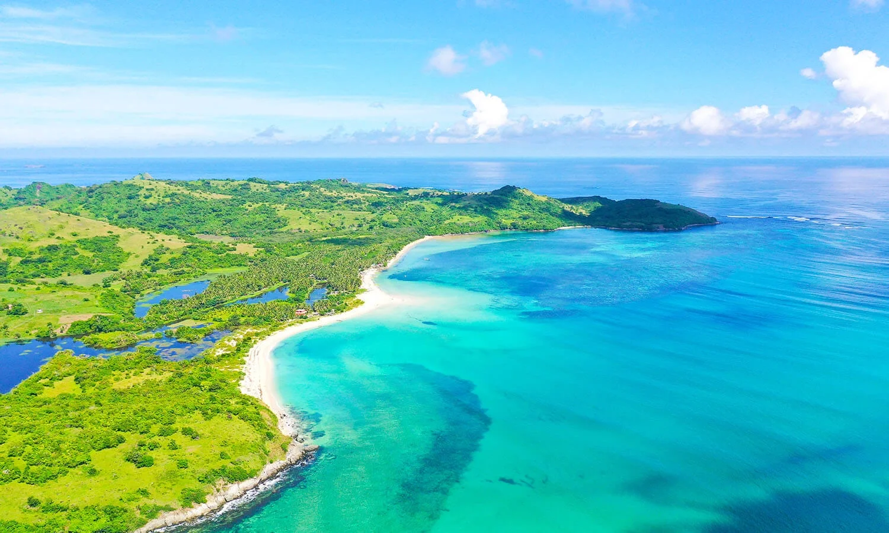
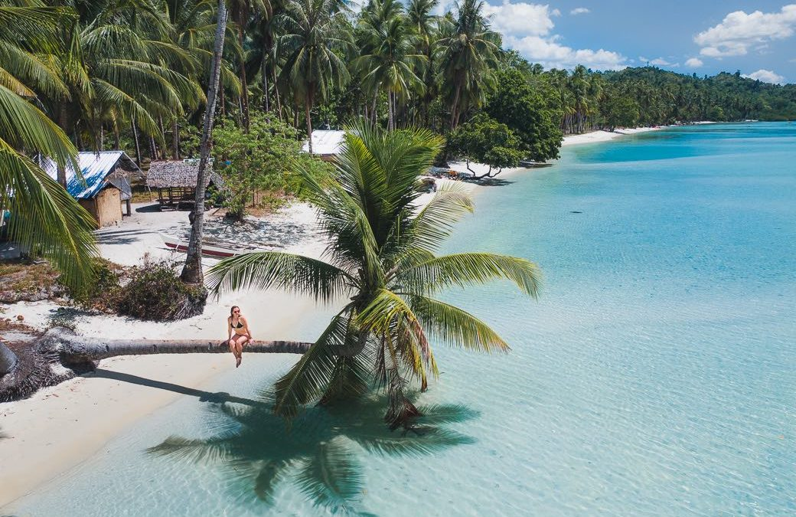
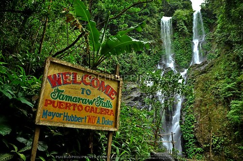
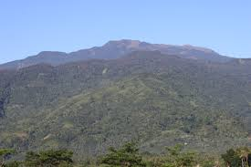
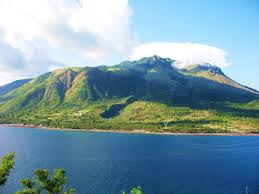
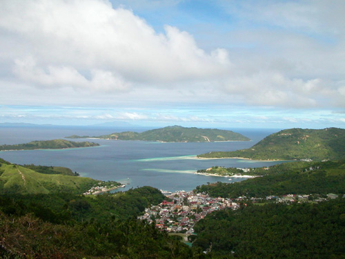

Known for its almost perfectly conical shape, Mayon Volcano is one of the most iconic landmarks in the Philippines. Visitors can enjoy panoramic views of the volcano from Legazpi City and explore the surrounding areas.
Caramoan Islands (Camarines Sur)

This group of islands is famous for its pristine beaches, crystal-clear waters, and limestone cliffs. It’s a popular destination for island hopping, snorkeling, and beach activities.
Port Barton (Palawan)

A hidden gem in Palawan, Port Barton offers a more laid-back and secluded beach experience. Visitors can relax on its white sandy beaches, go snorkeling, or explore nearby islands.
Tamaraw Falls (Mindoro)

Located in Puerto Galera, Mindoro, Tamaraw Falls is a majestic waterfall surrounded by lush greenery. Visitors can swim in its natural pools and enjoy the refreshing ambiance.
Mount Halcon (Mindoro)

This mountain in Oriental Mindoro is known for its challenging and rewarding hiking trails. It offers stunning views of the surrounding landscapes and is a haven for nature enthusiasts.
Marinduque Island (Marinduque)

Known for its unique festivals, such as the Moriones Festival, Marinduque Island offers beautiful beaches, historical sites, and natural attractions like the Bathala Caves and Poctoy White Beach.
Romblon Island (Romblon)

This island is known for its marble industry, with marble quarries and workshops scattered throughout the area. Visitors can explore the Marble Capital of the Philippines and witness the craftsmanship of local artisans.